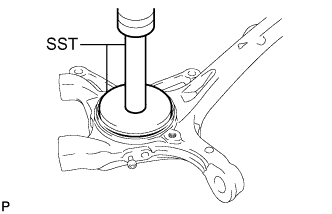
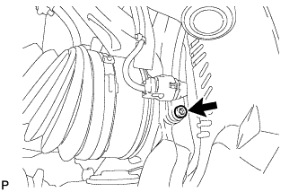
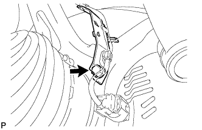

STEERING KNUCKLE > INSTALLATION |
| 1. INSTALL STEERING KNUCKLE OIL SEAL LH |
 |
Using SST and a press, press in a new oil seal.
| 2. INSTALL STEERING KNUCKLE LH |
Install the steering knuckle to the front suspension upper arm with the nut.
Install a new clip.
| 3. CONNECT FRONT LOWER BALL JOINT ATTACHMENT LH |
 |
Connect the attachment to the steering knuckle with the 2 bolts.
| 4. CONNECT TIE ROD END SUB-ASSEMBLY LH |
Connect the tie rod end LH to the steering knuckle with the nut.
Install a new cotter pin.
| 5. INSTALL FRONT AXLE HUB SUB-ASSEMBLY LH |
Install the front axle hub (Click here).
| 6. CONNECT FRONT SPEED SENSOR LH |
 |
Using a 5 mm hexagon socket, install the speed sensor with the bolt.
 |
Install the skid control sensor clamp and sensor wire with the bolt.
| 7. INSTALL FRONT WHEEL |
| 8. CONNECT CABLE TO NEGATIVE BATTERY TERMINAL |
| 9. CHECK SPEED SENSOR SIGNAL |
Check the speed sensor signal (Click here).
| 10. CHECK SRS WARNING LIGHT |
Check the SRS warning light (Click here).
| 11. MEASURE VEHICLE HEIGHT (w/ KDSS) |
Set the tire pressure to the specified value(s) (Click here).
Bounce the vehicle to stabilize the suspension.
 |
Measure the distance from the ground to the top of the bumper and calculate the difference in the vehicle height between left and right. Perform this procedure for both the front and rear wheels.
| 12. CLOSE STABILIZER CONTROL WITH ACCUMULATOR HOUSING SHUTTER VALVE (w/ KDSS) |
Using a 5 mm hexagon socket wrench, tighten the lower and upper chamber shutter valves of the stabilizer control with accumulator housing.
| 13. INSTALL STABILIZER CONTROL VALVE PROTECTOR (w/ KDSS) |
 |
Install the valve protector with the 3 bolts.
Attach the clamp, and connect the connector to the valve protector.
| 14. INSPECT AND ADJUST FRONT WHEEL ALIGNMENT |
Inspect and adjust the front wheel alignment (Click here).
| 15. ADJUST HEADLIGHT ASSEMBLY |
for Standard:
Adjust the headlight assembly (Click here).
for HID Headlight:
Adjust the headlight assembly (Click here).